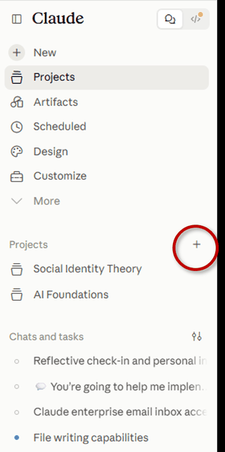
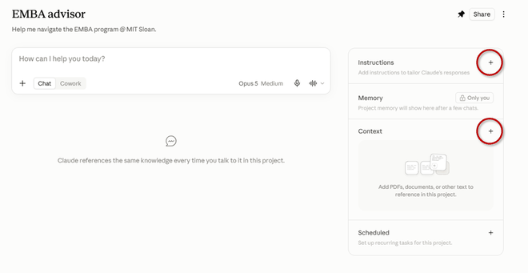

This page is showing every step at once. The script that keeps your place did not load. Read the steps in order; nothing is missing. What you type here will not be saved.
This browser is not saving what you type. Copy your answers before you close the tab.
Exercise Two · Get set · 5.0
Get set
A claude.ai Project that knows your program. You work on your own; your group stays together for the share-out.
Model settings for this exercise Claude Enterprise · Opus 5 · effort: Medium
The class pack
- Open the class pack and type the code. The code is on the screen. The pack is one zip (17.6 MB): the orientation files the program sent: agenda, calendar, survival guide, policies, contacts, hotel links, the bio book, and the public program pages, as text. Download it and unzip it. Add any files of your own you want your assistant to know.
- No code, or the pack will not open? Use the public pages (zip, 41 KB): the ten public program pages only. Open to everyone.
Check
Exercise Two · Step 5.1
Baseline
A fresh, ordinary chat, not in a Project. Paste the task.
Help me prepare for the next two class weekends. Identify required preparation, dates and logistics I need to act on, and the appropriate contacts for unresolved questions. Distinguish program requirements from your recommendations, and identify the source for each program-specific claim.
Read what it does. If it asks for your documents, that is the right behavior: a model that does not have the materials should ask for them.
What happened
Tick what applies. Any one is enough to continue.
Exercise Two · Step 5.2
Build the Project
Give it what it just asked for.


You help a first-year MIT Sloan Executive MBA participant prepare for the program. Answer from the uploaded materials. For every program-specific claim, name the document and the section it comes from. If the materials do not cover something, say so and suggest who to ask. Keep program requirements separate from your own recommendations.
Check
Exercise Two · Step 5.3
Ask with the materials
The same task, inside the Project, plus one constraint of your own: travel, a work deadline, family.
Help me prepare for the next two class weekends. Identify required preparation, dates and logistics I need to act on, and the appropriate contacts for unresolved questions. Distinguish program requirements from your recommendations, and identify the source for each program-specific claim.
Add your constraint as a second paragraph before you send.
Check
Exercise Two · Step 5.4
Ask one thing
it cannot answer
Ask one question the materials cannot answer. Does it say so, or improvise?
- What will Slafe (the cafe at Sloan) be serving on the Thursday you are here?
- What time does E62 open on a class Saturday?
- Who will be in my study group?
- Who is my assigned executive coach?
- Is there a locker for books between weekends?
Or anything about you that no document could know.
Exercise Two · Step 5.5
A second task
A new chat in the Project. Give it this.
Draft a note to my manager about the time commitment for the next two months, with dates and what I need from them.
Check
Exercise Two · Step 5.6
Improve
Change at least one thing about how your assistant responds, based on what you have seen: its instructions, or what is in its Context.
If you have extra time: continue probing the model until it makes an unsupported inference, gives an ambiguous instruction, or notes a conflict between two sources. Update the instructions to fix how the assistant handles it.
Check
Exercise Two · Step 5.7 · optional
Write it down
(optional)
This part is for you to keep, if you have time. Think about your own organization. Nothing here is required.
You built an assistant.
You gave a system your program's materials, found what it could and could not answer from them, and changed how it responds. Your answers are saved in this browser only. Copy them to keep them.